MAG deliberately separates capture, pixel rendering, UI drawing, text, presentation, composition host, surface ownership, copy policy, and adapter selection. These diagrams show how each selectable API reaches the Windows compositor, display driver, GPU, and monitor.
Blue boxes are application/API layers, purple boxes are presentation or composition, orange boxes are vendor drivers, red boxes are Windows kernel graphics, green boxes are GPU work, and slate boxes are the final composition/display path.
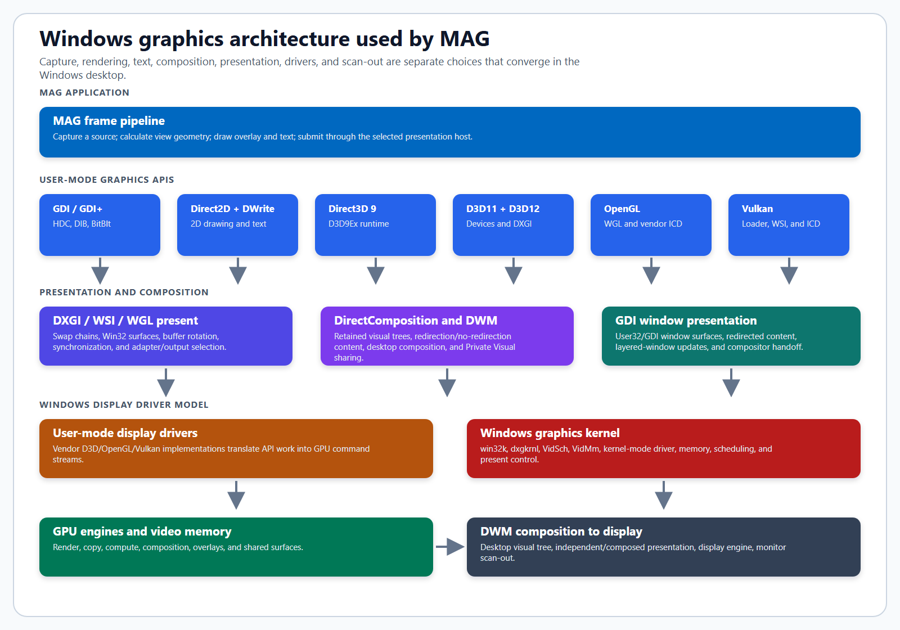
The complete Windows path. The selected graphics API renders a frame, a presentation host publishes it, WDDM schedules it, and DWM either composes it or Windows promotes an eligible surface to a hardware presentation path.
| MAG choice | Architectural responsibility |
|---|---|
| Capture API | Obtains pixels or a compositor-owned visual from GDI, DXGI Desktop Duplication, Windows Graphics Capture, DWM Thumbnail, or DWM Private Visual. |
| Graphics API | Produces the pixel-backed MAG frame through GDI, GDI+, Direct3D 9, Direct3D 11, Direct3D 12, OpenGL, or Vulkan. |
| UI API and Text renderer | Draws the minimap/controls and lays out glyphs independently of the primary frame renderer. |
| Target, Surface, and Host | Selects the requested Windows presentation model, redirection ownership, and HWND/DirectComposition/Presentation Manager attachment. |
| Copy policy | Rejects routes that exceed the allowed compositor-visual, true-zero-copy, GPU-local-copy, or CPU-round-trip class. |
| Display and Hardware adapters | Separates the output that owns presentation from the adapter that renders the frame. A mismatch may require a cross-adapter transfer. |
DWM Private Visual does not capture the desktop into a MAG-owned CPU bitmap. MAG asks DWM for a
shared desktop visual, retains supplemental source visuals for the desktop, taskbar, and visible
application windows, and places the resulting stack beneath its own overlay. The shared source stays
stable. Pan, zoom, move, and resize update the transform on viewVisual and the destination
clip on captureVisual.
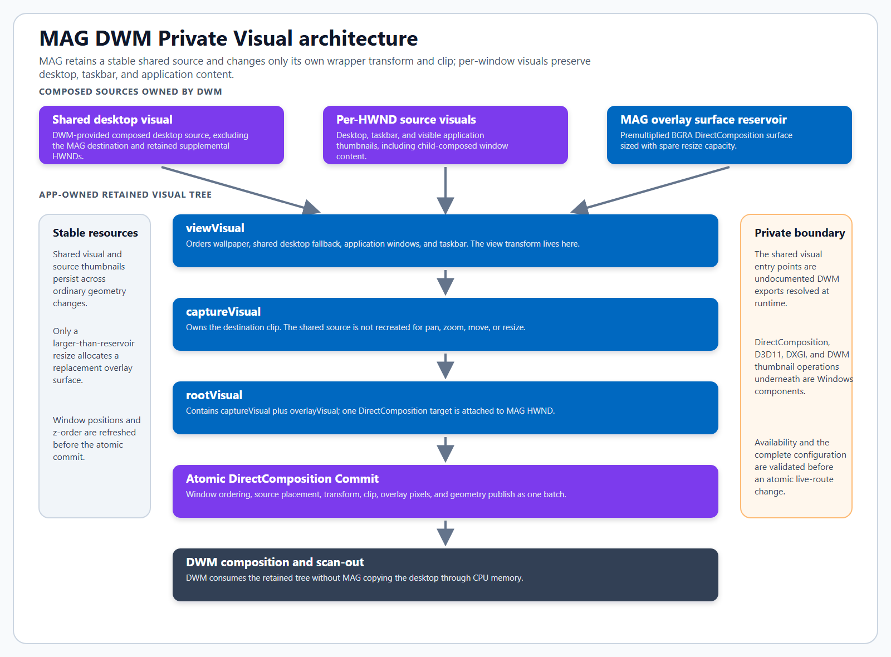
MAG's actual retained tree. Desktop wallpaper, the taskbar, ordinary windows, and child-composed application content are ordered in viewVisual. Transform, clip, source placement, overlay, and geometry publish in one DirectComposition commit.
The shared desktop visual supplies the composed desktop fallback. MAG also maintains retained DWM thumbnail visuals for visible top-level windows and shell surfaces, preserving their screen positions and z-order. This supplemental layer is what keeps desktop, taskbar, Chrome, Edge, Electron applications such as GitHub Desktop, and other child-composed content represented in the magnified result. The MAG destination is excluded to prevent recursion.
dwmapi.dll and are resolved at runtime. Their availability is build-sensitive.
DirectComposition, Direct3D 11, DXGI, DWM thumbnail operations, WDDM, and the display-driver path
around them remain Windows components. MAG validates the complete route before an immediate live-route change.
| Surface/host | Windows ownership and data flow | MAG consequence |
|---|---|---|
| Redirected HWND | DWM allocates the top-level window's redirection surface. GDI drawing and windowed presents feed that surface before desktop composition. | Broad compatibility. Depending on API and presentation model, Windows may copy or redirect a submitted buffer. |
| No-redirection + DirectComposition | WS_EX_NOREDIRECTIONBITMAP suppresses the ordinary opaque client surface. App-provided composition content replaces it in the DWM tree. | Required for a direct composition surface path; leaving the visual tree empty makes the client area transparent. |
| Traditional layered window | User32 consumes a CPU-addressable premultiplied BGRA bitmap through the layered-window update path. | Provides constant/per-pixel alpha and color-key semantics, but cannot satisfy strict zero-copy. |
| Presentation Manager | A Windows 11 presentation surface is attached through the presentation API instead of the ordinary redirection bitmap. | MAG validates runtime availability, adapter compatibility, target, copy class, and pacing before activation. |
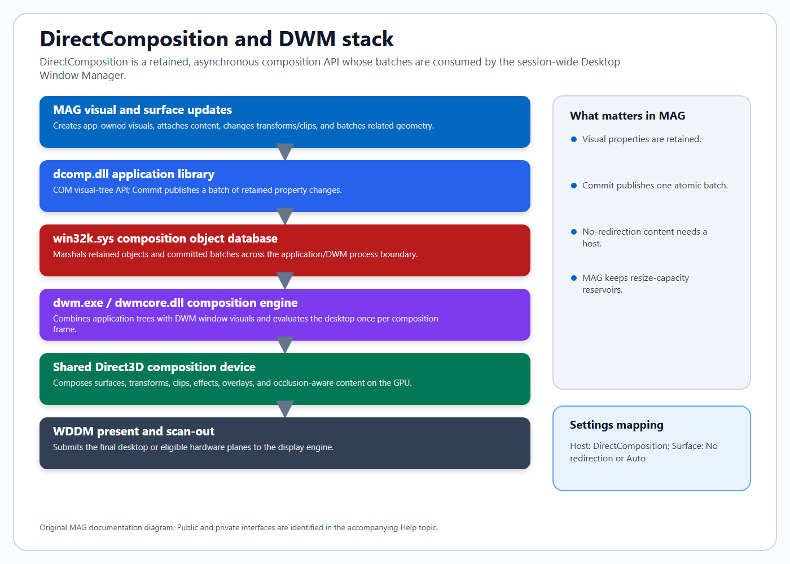
DirectComposition retains an application visual tree. Commit publishes a batch to the Windows composition engine, which combines all application trees with DWM's desktop tree.
dcomp.dll is the application-facing COM library. Composition objects are marshaled through
the kernel-mode object database in win32k.sys to dwmcore.dll in dwm.exe.
DWM evaluates committed batches asynchronously and composes all session windows using a shared
Direct3D composition device. MAG uses the C COM ABI directly; C++ wrappers are not required.
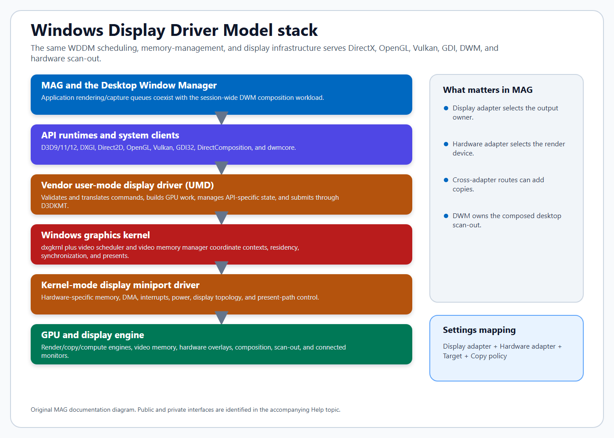
The Windows Display Driver Model is shared infrastructure. API-specific user-mode drivers submit through the Windows graphics kernel and hardware display miniport driver to GPU engines and scan-out.
| Layer | Role |
|---|---|
| User-mode runtime | Implements API validation/object behavior and connects the application to a vendor user-mode display driver or Windows software renderer. |
| User-mode display driver (UMD) | Translates Direct3D/OpenGL/Vulkan operations into GPU command streams for a particular adapter. |
| dxgkrnl, VidSch, and VidMm | Coordinate GPU contexts, scheduling, preemption, synchronization, residency, virtual memory, presents, and fault recovery. |
| Display miniport/KMD | Implements hardware-specific DMA, memory, interrupts, power, display topology, present, overlay, and scan-out control. |
| Display engine | Scans out the final DWM image or eligible hardware planes to the monitor. This is distinct from the GPU render engines. |
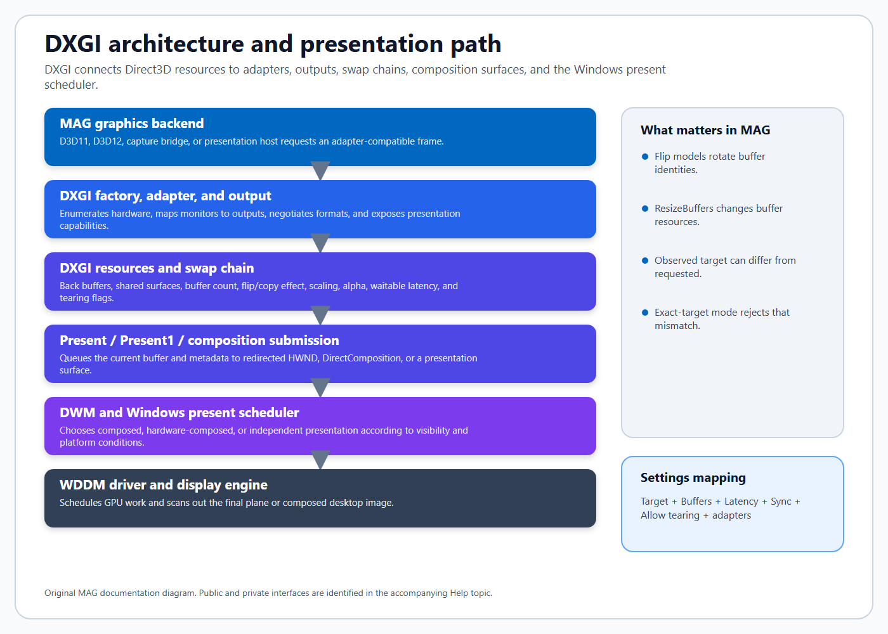
DXGI supplies adapter/output discovery, shareable resources, swap chains, buffer rotation, pacing controls, and presentation. Direct3D 11 and 12 both use DXGI swap chains; Direct3D 9, OpenGL, and Vulkan expose different application APIs.
A requested target is not a permanent property of the application alone. Windows decides whether a submitted surface is composed, hardware-composed, or independently presented based on the selected swap/present model, visibility, occlusion, scaling, format, output, driver, and current desktop state. Require exact target tells MAG to treat an observed mismatch as a failed configuration.
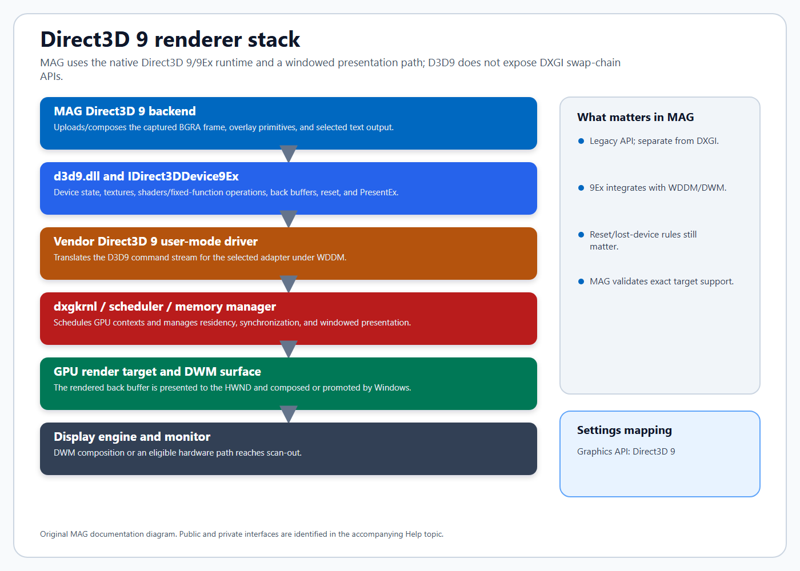
Direct3D 9: MAG uses the D3D9/9Ex windowed path. The API predates DXGI and presents through its own device interfaces while still participating in WDDM and desktop composition.
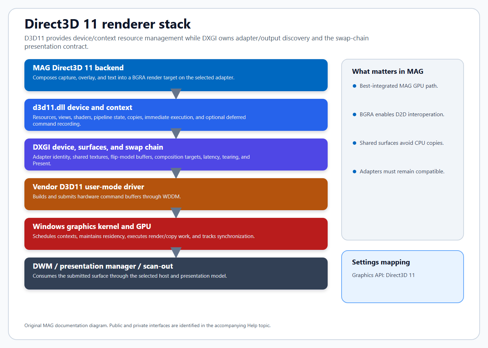
Direct3D 11: the device/context owns rendering and resource operations; DXGI owns adapter identity, shared surfaces, swap-chain buffers, pacing, tearing flags, and Present.
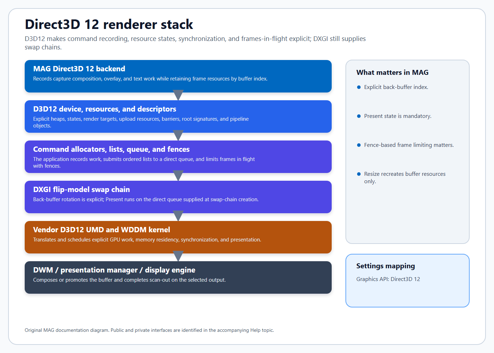
Direct3D 12: MAG explicitly records command lists, transitions resource states, submits a direct queue, tracks the current DXGI back buffer, and limits reuse with fences.
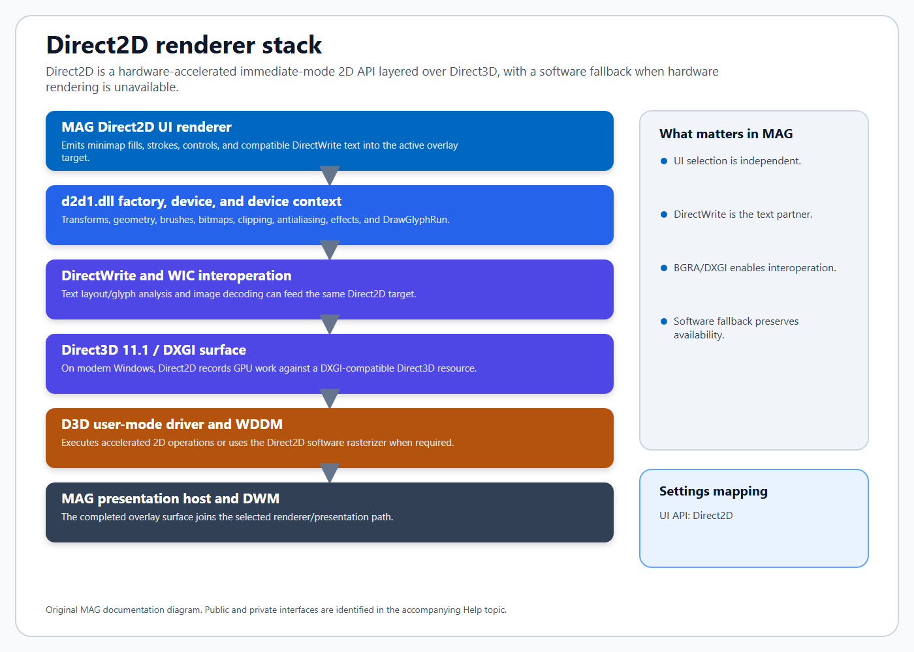
Direct2D: on modern Windows, Direct2D is layered over Direct3D 11.1 and can target a DXGI surface. Its software rasterizer remains available when hardware acceleration is not appropriate.
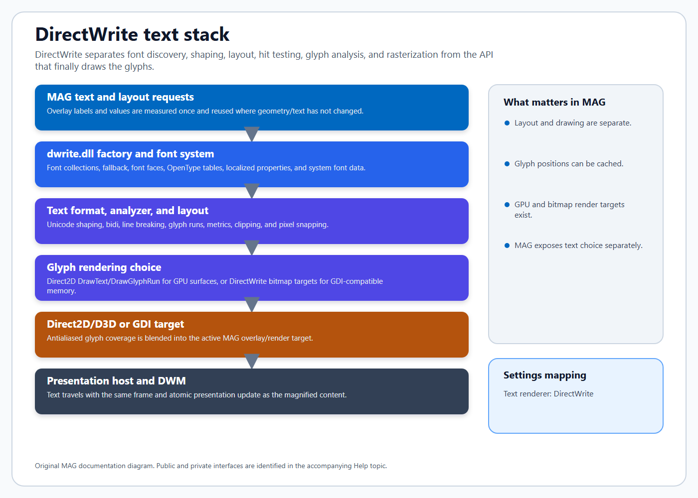
DirectWrite: font discovery, shaping, line layout, metrics, hit testing, and glyph analysis are separated from final drawing. MAG can send glyph runs to Direct2D or use another selected text route.
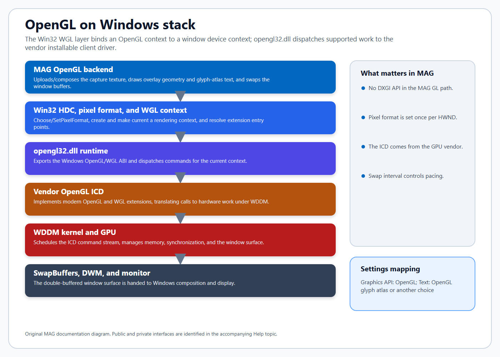
OpenGL: WGL binds a rendering context to the HWND device context and its one-time pixel format. opengl32.dll dispatches to the adapter vendor's installable client driver; SwapBuffers publishes the window buffer.
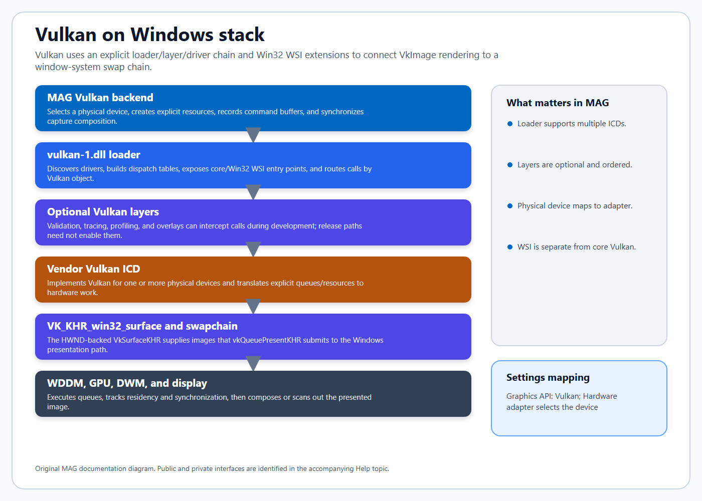
Vulkan: vulkan-1.dll discovers ICDs and constructs dispatch chains. Optional layers can validate or trace calls. Win32 WSI creates the HWND-backed surface and swap chain used by vkQueuePresentKHR.
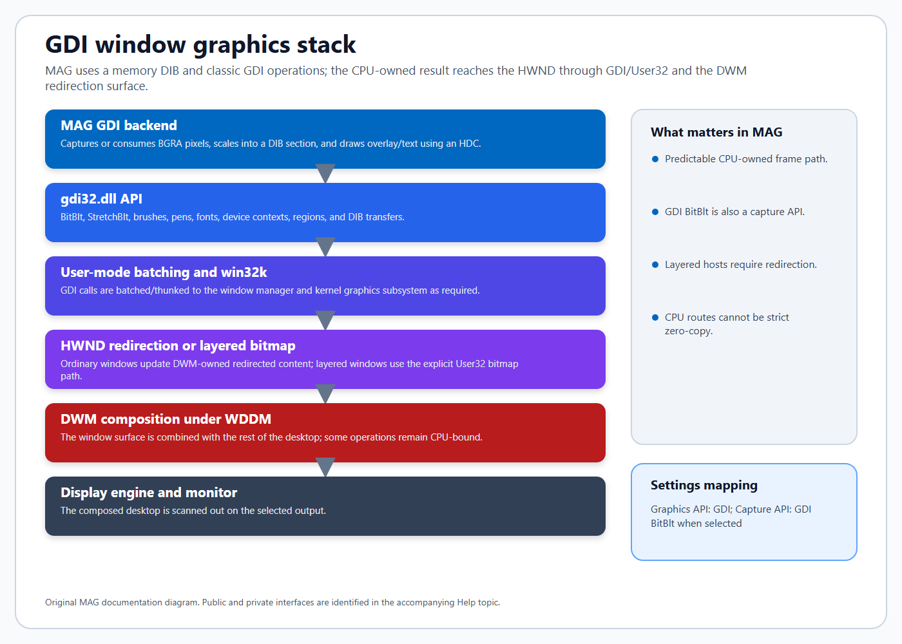
GDI: MAG's GDI backend owns a DIB section and HDC. Ordinary windows feed a DWM redirection surface; traditional layered windows use an explicit premultiplied bitmap update.
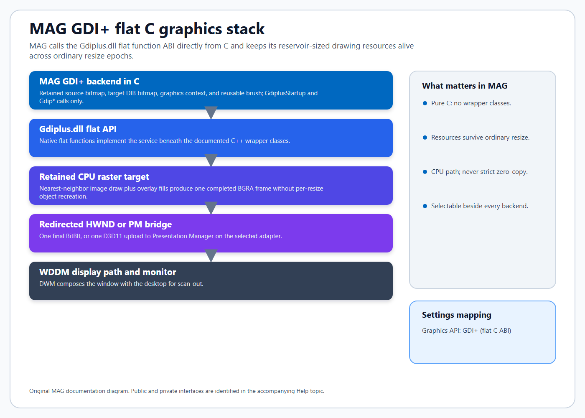
GDI+: MAG calls the native flat Gdiplus.dll ABI directly from C, without the SDK's C++ wrapper classes. The backend retains its reservoir-sized source bitmap, target DIB bitmap, graphics context, and brush across ordinary resizes. It presents the completed CPU surface through one redirected-HWND BitBlt or the selected-adapter Presentation Manager bridge.
| Subject | Reference |
|---|---|
| Windows graphics APIs | Overview of the Windows Graphics Architecture |
| DirectComposition | DirectComposition architecture and components |
| WDDM | Windows Display Driver Model architecture |
| Direct3D 9 | Direct3D 9 architecture |
| Direct3D 11/12 | D3D11-to-D3D12 architecture comparison and D3D12 swap chains |
| Direct2D/DirectWrite | Direct2D overview and Direct2D and DirectWrite text rendering |
| OpenGL on Windows | Loading an OpenGL ICD and WGL/Windows reference |
| Vulkan | Khronos Vulkan Loader architecture and Vulkan Window System Integration |
| GDI+ | GDI+ flat API |
UpdateLayeredWindowIndirect, CPU/GPU round trips, and Direct2D-to-GDI/WIC/DXGI alternatives.WS_EX_NOREDIRECTIONBITMAP and a premultiplied composition swap chain attached to a DirectComposition visual.